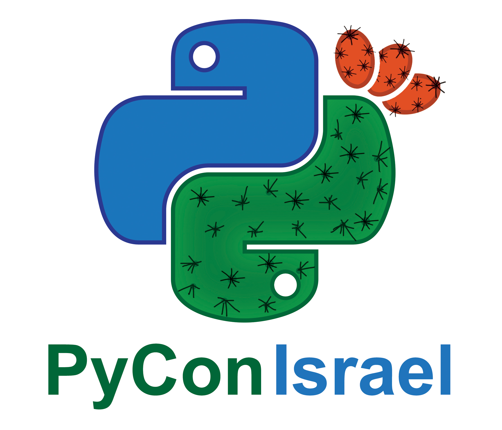

Home
Location
Accessibility FAQ
Agenda
June 2nd Django Girls
June 3rd-4th Main Conference
June 5th Workshops Day
June 3
Main Hall
Hall 3
Hall 2 (Pydata)
08:30-09:30
Registration and coffee
09:30-09:45
Opening Session
09:45-10:30
Nicole Harris
PyPI: Past, Present and Future
10:30-11:00
Diabolical Python
Dan Gittik
Beautiful {Automation} System Tests using Pytest
Edward Haas
NLP on legal contracts
Uri Goren
11:00-11:45
Python Project Productionization
Yehuda Deutsch
Understanding Python’s Debugging Internals
Liran Haimovitch
Beyond Word Embeddings The Future of Semantic Represenation
Ari Bornstein
11:45-12:15
"Is it safe ?" - python code security tools
Yehuda Lavy
Fixtures and Test Doubles in Pytest
Fixtures and Test Doubles in Pytest
Standardizing Clinical Data with Python
Jacob Barhak
12:15-12:45
Teaching Thousands Of CPUs How To Read
Roy Penn
I Put Kernels in Your Kernel - Using Machine Learning in Kernel Space
Ido Ben-Yair & Pavel Rogovoy
When the power of Where meeting the power of Share
Yehuda Horn
12:45-14:00
Lunch
14:00-14:30
Descriptors - Supercharge Your Dot
Miki Tebeka
Real world Graphene: lessons learned from building a GraphQL API on top of a large Django project
Marcin Gębala
Numpy: what has changed and what is going to change?
Matti Picus
14:30-15:00
Data Classes in Python: Why They're Great + Examples Using attrs and dataclasses
Tal Einat
Pipenv - The Python Companion You Wish You Always Had
Avi Aminov
Model explainability
Idan Angel
15:00-15:30
Coffee break
15:30-16:00
Logging Like a Pro - The Stuff They Don’t Tell You
David Bordeynik
When Deep Learning meets Production
Nadav Goldin
TBD
16:00-16:30
Parallel computing and Concurrency
Guy Doulberg
Settling new planets - adding Ansible modules and plugins
Barak Korren
Social Network Analysis - From Graph Theory to Applications with Python
Dima Goldenberg
16:30-17:00
Hacking Around Enumeration
Mark Geyzer
Rust is the next Python FFI
Shmuel Amar
AI based triage - predicting late and early mortality after emergency department visit.
Talia Tron
June 4
Main Hall
Hall 3
Hall 2 (Pydata)
08:30-09:30
Registration and coffee
09:30-10:30
Erel Levine
Beating #fakenews with Jupyter notebooks
10:30-11:00
Python 3.8 new stuff, assignment expressions and why Guido quits as BDFL
Eli Gur
PyPy - the hero we all deserve.
Amit Ripshtos
A Case study: How to effectively operationalize a Machine Learning model
Moran Haham
11:00-11:30
Building and running containers with Podman and Buildah
William G Henry
Async/Awaiting Production
Ronnie Sheer
Disease Modeling with Scipy and PyMC
Dean Langsam & Dor Kahana
11:30-11:45
Pylint - Python static code analysis
Gilad Shefer
11:45-12:00
Hierarchical Temporal Memory in Python
Fred Rotbart
12:00-12:30
Serverless orchestration of async serverless workers in the cloud
Nikolay Grishchenko
Building ORMs from scratch with advanced Python
Barak Itkin
12:30-14:00
Lunch
14:00-14:30
Extend Kubernetes to make you a coffee
Daniel Belenky & Gal Ben Haim
Pandas for Fun and Profit: Using Pandas for Successful Investing.
Daniel Goldfarb
our DASK ETL Journy
Sephi Berry
14:30-15:00
From 2 to 3 in 1 go
Yael Green
Making our Municipalities more Transparent using Python!
Adam Kariv
How do algorithmic models become biased?
Eva Sasson
15:00-15:30
Coffee break
15:30-16:00
I hate security - Bluetooth distance detection story
Lior Mizrahi
Writing user space filesystems
Yuval Turgeman & Daniel Belenky
Building text classifiers with state-of-the-art Deep Learning frameworks
Inbal Horev
16:00-16:30
"Scope of Variables in Python" - A full scoop of python scopes!
Yoav Glazner
Decentralizing the cloud with Project Aleph (decentralized applications framework, aka "Look ma, no -centralized- cloud!")
Moshe Malawach
Data Pipelines - Comparing Airflow and Luigi by people who have made mistakes in both
Orr Shilon & Alex Levin
16:30-17:00
Closing Session
 Diabolical Python
Diabolical Python "Is it safe ?" - python code security tools
"Is it safe ?" - python code security tools